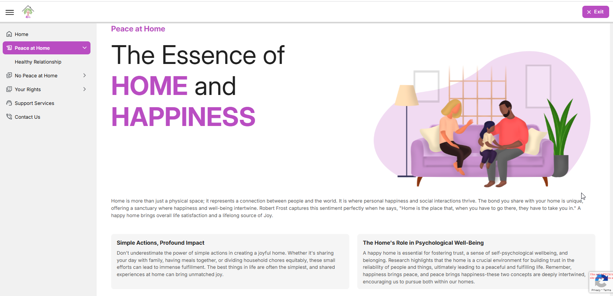
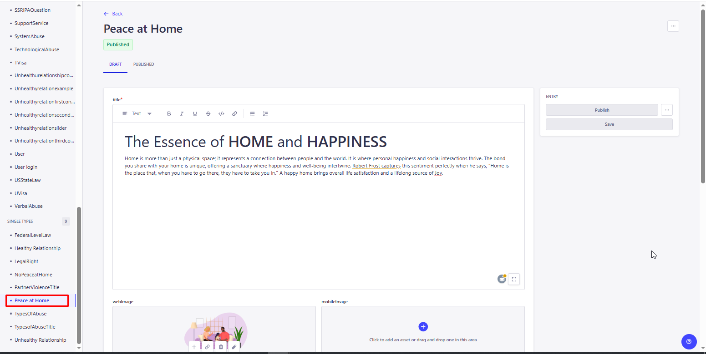
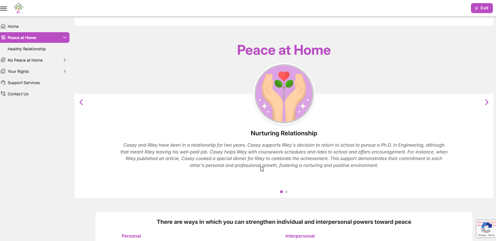
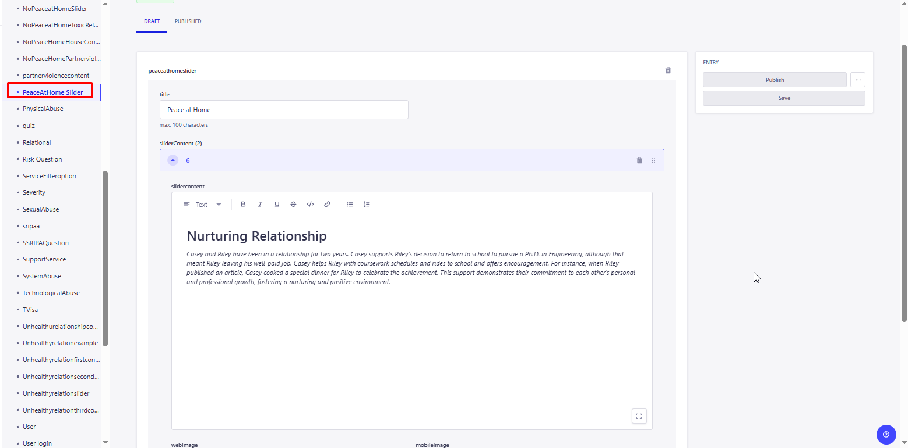

<link rel="stylesheet" href="../css/styles.css">
 
<main>
        <h2>Peace at Home</h2>
        <p>
        1. The Peach at Home page is more than just a physical space; it represents a connection between people and the world. It is where personal happiness and social interactions thrive <br>
        2. The user inputs a valid URL to launch the Education Module and the URL is : 
            <a target="_blank" href=https://happy-grass-02e46c50f.6.azurestaticapps.net/peaceathome>Peace at Home</a> <br>
        3. The Peace at Home displays the topics' content and Slider information.<br> 
            <br><br>
           The administrator must access the CMS site in order to add, edit, and update the material on the page..<br><br>
           Go to CMS > Content Manager > Select and open the 'Peace at Home' under the Single type from the side menu.<br>
            <br>
           Update the content if required and Click on Publish to make the changes refelects in the application. <br>
        <h4><b><u>Peace at Home Slider</u> </b></h4>  
        4. A slider with forward and backward arrows at the bottom of the page allows the user to navigate between the sliders..<br>
           All these slider contents are stored in the CMS with its images and user can able add/edit and updated the content based on the requirments <br> 
            <br><br>
           <u>New Entry / Update the Existing Slider Content.</u><br>
           For Home Sliders: Go to CMS > Control Manager > Select and open 'PeaceAtHome Slider' > 
           Click on Create new Entry for adding the new or open the exisiting content, update and save it.<br>
            <br>
           Update the content if required and Click on Publish to make the changes refelects in the application. <br>
        </p>                 
</main>